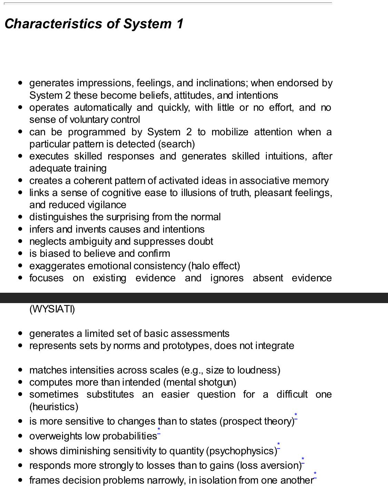

Books referenced: - The Black Swan Talib - Herbert Simon - - Prospect theory - choice and consequence Thomas Shelling - Nudge
- What you see is (what you think is) all there is
- Costs are not losses.
21 hours of this book. What are the key takeaways for me? - substitution biases - What you see is all there is and all - The ways it biases - Californians aren’t actually happier because they don’t think about what they have.
“The acquisition of skills requires a regular environment, an adequate opportunity to practice, and rapid and unequivocal feedback about the correctness of thoughts and actions. When these conditions are fulfilled, skill eventually develops, and the intuitive judgments and choices that quickly come to mind will mostly be accurate. All this is the work of System 1, which means it occurs automatically and fast.”
2024-04-27
Conclusion
- Anchoring evfects
- Narrow framing
- Excessive coherence
- Judge a decision by how it was made, not by how it turned out
Chapter , - remembering self vs experiencing self. We do not - We only remember the peak and the end. Not duration. - Happiness is a function of time you spend with people you love and who love you. - Ill health has a huge impact on happiness. - Religion doesn’t reduce depression. - Being poor makes someone miserable, but being rich has little positive impact on happiness. - Having an ambitious goal and not achieving it creates more dissatisfaction than not having a goal at all - Miswanting: misprojecting what you think will make you happy given your preferences will change and your tastes will adjust. - Focus illusion: what you think about isn’t as important as when you’re not thinking about it.
Chapter
- “preference reversal”. You’re likely to choose to exercise a safer bet. 11/36 chance to win 160 or 25/36 to lose 40. Or 25/36 to win $40 ot 1/36 to lose 10. You may choose to sell the bet and preference reverses. Owning vs exercises.
- Coherence doctrine
- substitution. We do substitution a lot in decisions. I like his chin. He’s therefore a strong leader. I’ll vote for him. Substituted looks for leadership qualities.
- Substitution on sales. Do you want 100 burgers or $300? Save the dolphins? Hard to put a price in how much to save dolphins. You need to break it down
- Single evaluation vs joint evaluation. We’re better at joint. Assessing damages in single evaluation is hard. But assessing two cases together is much easier. Legal system favors single evaluation of a case rather than relative evaluation which is much more fair.
- Need joint evaluation in data science. Improves overall outcomes.
- When you look at a case individually you’re more likely to be system 1.
Framing - keep vs lose. - France lost the game. Italy won. - Losses are not costs. → paying $5 for a lottery ticket vs paying $1 and losing $4 are very different. - 10% mortality rate vs 90% survival rate → people pick the positive. - People have a hard time making choices against the frame. If it’s framed as the wrong choice then they’re likely to do the “right” thing - gallons per mile or miles per gallon? Gallons per mile is a much better framing.
- Frame it as “how much money you keep” rather than lose
- if you lose tickets will you replace them? If you lose money will you still buy the tickets? → sunk cost fallacy. Mental accounting. Only what matters is where you are today.
Sunk cost anxiety: it takes longer than you think. Do you keep going? Depends on at that point how much time it’ll take.
2024-04-26
- You’re more likely to regret if you think not enough or more than just a litttle. Either think not at all or think it all the way through.
- People feel more regret with action than inaction. → someone selling a stock and they would have gotten $1200 vs someone who didn’t trade and would have gotten $1200
- Mental accounts of sunk costs → why it’s better to swap out a bad CEO because the new one might not be better but they don’t have sunk cost fallacy.
- rare events are overweighted in the mind if they’ve been experienced. Underweighted when they haven’t been experienced.
- -$100 vs gain $200 on a coin flip.
- The pain is more of $100 more than the benefit of $200
- Don’t engage in a single gamble if you can’t engage in 1000 of them.
- Your personal decisions, if independent, will
- Small gambles in isolation aren’t life. Life is a bunch of small gambles. Don’t be afraid of small risks. You will lose.
- Think like a day trader.
2024-04-24
Decision weighting according to Kahneman – Shane Gryzko’s Blog

Vivid: the more salient an idea, the more probable it seems. “I’ll give you $10.” or “I’ll give you $10 in an envelope mailed to you timestamped to arrive via FedEx and delivered to your mailbox by Monday at 9am”. The latter seems more probable.
Denominator neglect: a disease that kills 1/100 people is more salient than 1.5%. →
terrorism: associative availability bias compounded by media. All you can think of is the bomb by the bus’.
Certainty principle:
Decision weights: how people interpret probabilities in decisions
Interesting paper on “loss aversion”. Golfers perceive putting for birdie as a foregone gain, but putting for par as something they cannot lose. So for the same distance, you’re slightly more likely to sink the par than you are the birdie. https://www.researchgate.net/figure/Notes-This-figure-depicts-the-fraction-of-successful-par-and-birdie-putts-by-distance-to_fig2_229050997
- Some economists analyzed 2.5M putts between 2004-2009 on PGA tour. People are 3.6% better at sinking a par than a birdie. Some economists analyzed 2.5M putts between 2004-2009 on PGA tour. People are 3.6% better at sinking a par than a birdie.
- Is Tiger Woods loss averse - AER 2011
endowment effect:
- Losses are about 2x more painful than gains.
- utility for exchange vs use. You’re likely to buy tickets at $500 and not be willing to sell them (if they’re your favorite band) for $1500. Professor won’t sell wine for cheaper than $100 than that he bought for 35
- Benefits of buying something cheap vs negative emotion of
- Poor people are always losing. They’re choosing between two losses.
Negative information overwhelms positives 5 to 1. Survival instincts. Loss aversion.
2024-04-23
- planning fallacy and irrational perseverance. You know it’s not going to happen but you continue anyway thinking you can beat it. → system 1 thinking.
- “We gave up rationality rather than giving up the enterprise”
- Inside view vs outside view.
- How long would it take to write a book? 2 years
- how did it take others? Are we better than them? What’s the base rate?
Better planning: - how long do you think it’ll take? - Why? - What’s a similar project in the past you’ve done? - How long did it take you?
Bad planning: - overestimate benefits, underestimate costs. Overestimate abilities, underestimate time it takes
Validity: how predictable is the environment? How much time does the person have in the environment? What’s the feedback loop? Anesthetist vs radiologist.
2024-04-22
- confidence is a function of how coherent the story is in somebody’s mind
- Simple formula
- Recruit using 6 dimensions, with a 1-5 scale. Take the one with the highest score.
- Intuition is recognition
- #BlogTopic: most of the advice we receive is from people just telling us how they did it, despite the fact there are hundreds of ways of doing it.
Application: - Why do I believe X model is good? Am I at risk of substitution: when you swap one piece of information for another
2024-04-19
- Hindsight bias: makes you avoid thinking about the process of a decision and instead just keep guessing How to Decide: Simple Tools for Making Better Choices focuses on this
2024-04-18
How to unbias an intuitive prediction allowing for regression to the mean
Reading she and college grade. Reading age =
- Start with an estimate of average GPA (base rate)
- Determine the GPA that matches your impression of the evidence (conjuctive average)
- Estimate the correlation between your evidence and GPA (correlation between base rate and evidence’s impact on base rate)
- If your correlation is .30, move 30% of the distance between the average to the matching GPA (move from base rate to conjunctive base rate )
2024-04-17
- regression to the mean: anyone who has outstanding performance will get highlighted. Then they’ll do worse the next time period by nature.
- All data regresses to the mean.
- Some places spike with randomness.
- The overall trend
2024-04-16
- anchoring. Also discussed in Influence The Psychology of Persuasion and Never Split the Difference - Ackerman method.
- Everyone is susceptible to this, judged of 15 years rolling a dice.
- First mover advantage in a negotiation. Don’t allow the other person to set the anchor too extreme.
- Normality. Recent crash of a plane will make you more skeptical to fly.
- If you see two accidents in one place, that’s the “accident place”
- Availability bias: everyone thinks they do more than they actually do. → every team member wants a promotion.
- “I do X a lot” → observation. We’re bad at this observing point due to so many inherent biases. But the emotional thing of “I am good because I do that a lot” is a separate issue.
- The Linda Problem - writeup.
2024-04-11
- positive emotions create cognitive ease, letting down the system 2 thinking. Happiness and creativity are linked.
- Have your guard up if you’re too much system 2. Try to get into the right system for the task.
- Coherence: because there’s a big event, it must have consequences. Because of consequences, there must be a causal effect.
- Saddam Housein captured. Stocks fall. Papers declare the link.
- Priming.
- Normality: what’s normal? Things we see often. Even if they’re rare.

2024-04-10
- ego depletion. Cognitive tasks deain.
- Default to easiest when hungry.
- Familiarity. You’re likely to believe something that’s familiar. → benefit of reading books. You anchor to the familiar.
- Reciprocal link.
- Priming. It’s a real thing.
- Glucose raises with cognitive strain. → people do better on tests with poor font.
2024-04-09
- substitution. Instead of “is ford a good stock” we ask “do I like ford?”
- People are not intuitive statisticians. They ignore the common biases.
- Heuristics and biases are good shortcuts.
- Illusion of the lines → you can’t see them differently. But you can recognize the rules. This is true for statistical thinking → recognize the systems.
- Attention blindness → when focused you can’t see or hear around you.
- Pupil shows the attention of the mind.

_________________________
Bryan lives somewhere at the intersection of faith, fatherhood, and futurism and writes about tech, books, Christianity, gratitude, and whatever’s on his mind. If you liked reading, perhaps you’ll also like subscribing: